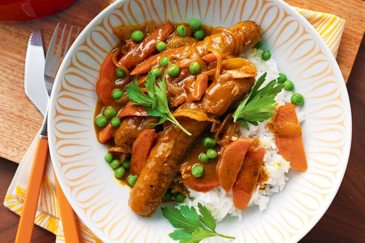

Curried sausages
Ingredients:
- 1 tbsp olive oil
- 800g thin beef sausages
- 1 large brown onion, thinly sliced
- 2 carrots, peeled, thinly sliced
- 2 garlic cloves, crushed
- 1 tbsp KEEN'S Traditional Curry Powder
- 2 tbsp fruit chutney
- 2 cups Massel chicken style liquid stock
- 1 cup frozen peas
- Coles White Medium Grain Rice, Steamed, to serve
- Parsley leaves, to serve
Recipe:
- Heat oil in a large, heavy-based saucepan over medium-high heat. Cook sausages, in batches, turning, for 5 to 6 minutes or until browned all over. Transfer to a large plate.
- Add onion, carrot and garlic. Cook, stirring, for 5 minutes or until onion has softened. Add curry powder. Cook, stirring, for 30 seconds or until fragrant. Add fruit chutney and stock. Return sausages to pan. Cover, bring to the boil. Reduce heat to medium-low. Simmer, uncovered, for 25 minutes or until sausages are cooked through and sauce thickens.
- Stir in peas. Season. Cook for 1 to 2 minutes or until heated through. Serve with steamed rice and sprinkled with parsley leaves.

Zucchini fritters
Ingredients:
- 3 (about 400g) medium zucchini
- 75g (1/2 cup) self-raising flour
- 40g (1/2 cup) parmesan, finely grated, plus extra to serve
- 3 shallots, ends trimmed, thinly sliced
- 1 egg, whisked
- 1/4 cup fresh continental parsley, chopped
- 2 tsp dried oregano leaves
- 1/4 tsp ground nutmeg
- 1 tsp salt
- 1 tbsp olive oil
Recipe:
- Trim the ends from zucchini. Coarsely grate the zucchini. Place in a colander and squeeze out as much excess moisture as possible. Transfer to a bowl. Stir in self-raising flour, parmesan, shallots, egg, parsley, oregano, salt and nutmeg.
- Heat 1 teaspoon olive oil in a non-stick frying pan over medium-high heat. Drop three portions of zucchini mixture into pan. Cook for 1 1/2 minutes each side or until golden and cooked through. Transfer to a plate. Repeat with remaining olive oil and remaining zucchini mixture.
Gulam Jamun
Ingredients:
- Nestle MILKMAID - 1/2 tin
- Flour - 2 cups (200 gm)
- Grated Paneer - 600 gms
- Sooji/Rava - 200 gm
- Baking Powder - 1½ tsp
- Baking Soda - 1½ tsp
- Oil - For Frying
- Water - 2 litres
- Sugar - 1 kg
Recipe:
- Step 1: Boil sugar and water to prepare syrup remove from fire. Add cardamom and keep aside to cool.
- Step 2: In a mixing bowl put the flour, paneer, sooji, Nestlé MILKMAID, baking powder and baking soda. Mix gently to make a soft dough. Do not knead too much.
- Step 3: Divide the mixture into 30-35 portions and gently roll into round gulab jamuns. Fry in the oil at very low flame till golden brown in color.
- Step 4: Keep putting the fried gulab jamuns in the prepared sugar syrup. Once all the gulab jamuns are in the sugar syrup bring it to a boil and remove from flame.
- Step 5: Serve warm.

Zucchini slice
Ingredients:
- 5 Coles Australian Free Range Eggs
- 150g (1 cup) Coles White Self Raising Flour, sifted
- 375g zucchini, grated
- 1 large onion, finely chopped
- 200g rindless bacon, chopped
- 1 cup grated cheddar cheese
- 60ml (1/4 cup) vegetable oil
Recipe:
- Preheat oven to 170C.
- Beat the eggs in a large bowl until combined. Add the flour and beat until smooth, then add zucchini, onion, bacon, cheese and oil and stir to combine.
- Grease and line a 30 x 20cm lamington pan. Pour into the prepared pan and bake in oven for 30 minutes or until cooked through.
Easy fried rice
Ingredients
- 1 cup Coles Long Grain White Rice
- 2 tsp vegetable oil
- 2 eggs, lightly whisked
- 2 bacon rashers, chopped
- 1 carrot, peeled and grated
- 2 shallots, trimmed, finely sliced
- 1/2 cup frozen peas, thawed (see notes for Low FODMAP substitution)
- 1 tbsp soy sauce
- Sesame seeds, to serve
- Shallots, sliced, extra, to serve
Recipe
- Cook the rice in a large saucepan of boiling water for 12 minutes or until tender. Drain and leave to cool..
- Heat oil in non-stick wok or large frying pan over medium heat. Add eggs. Swirl over base to form an omelette. Cook for 2 minutes or until set. Transfer to a chopping board. Set aside to cool slightly. Roll up and thickly slice.
- Add bacon to wok. Cook 4 minutes until light golden. Add carrot. Stir fry 1 minute. Add shallots, peas and rice. Cook, stirring, 3-4 minutes. Add egg and soy sauce. Stir until heated through. Sprinkle with sesame seeds and top with extra shallots. Serve immediately.

Impossible quiche
Ingredients
- 125g ham, chopped
- 1 small onion, finely chopped
- 1 1/2 cups (180g) grated tasty cheese
- 1/3 cup (50g) Coles white self-raising flour
- Salt & freshly ground pepper, to season
- 4 eggs
- 1 1/2 cups (375ml) milk
Recipe
- Preheat oven to 200°C. Grease a 5 cup capacity pie dish.
- Combine ham, onion, cheese, flour, salt and pepper in a medium bowl. Scatter over base of dish.
- Whisk eggs and milk together in a large jug and pour over ham mixture. Cook for about 40 minutes or until puffed and golden. Cool slightly. Serve warm or cold.